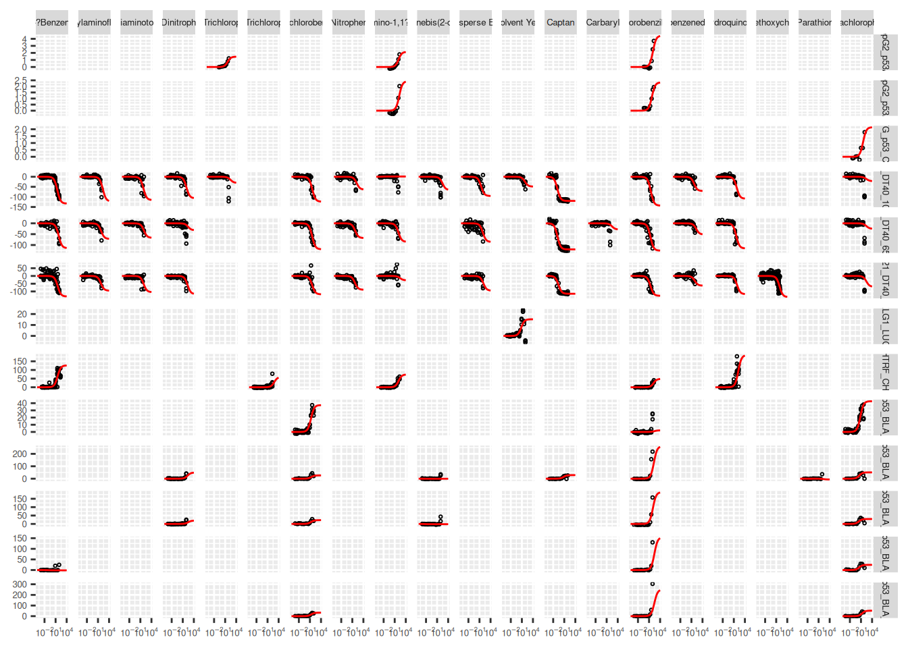
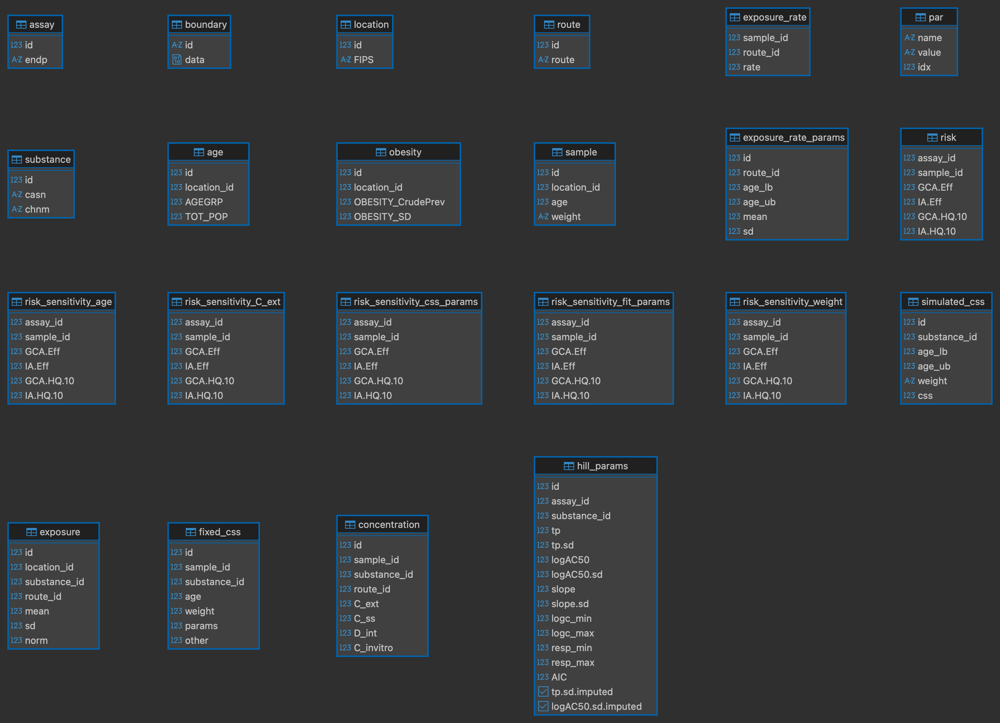
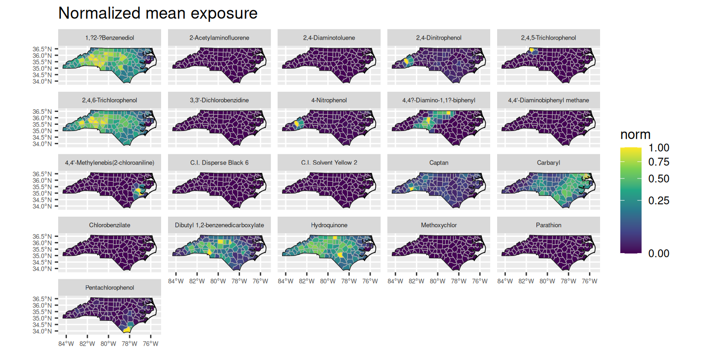
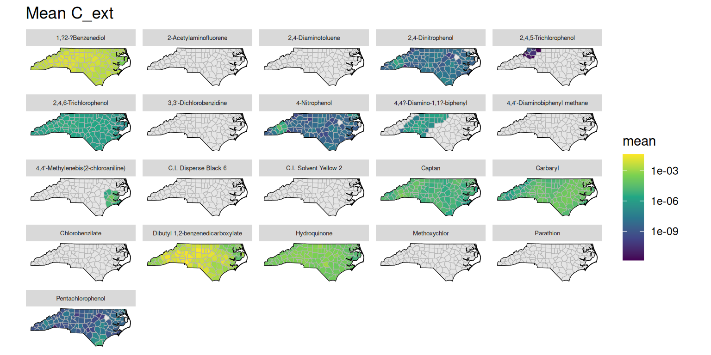
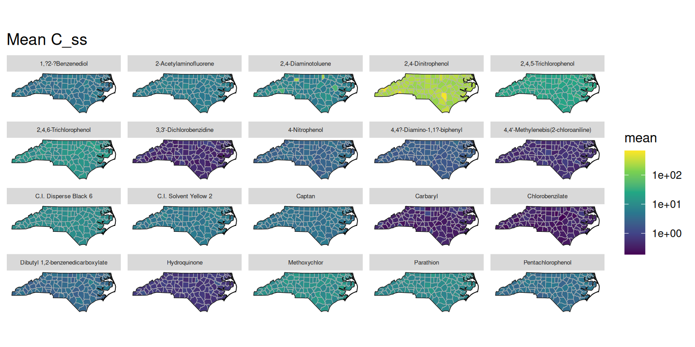
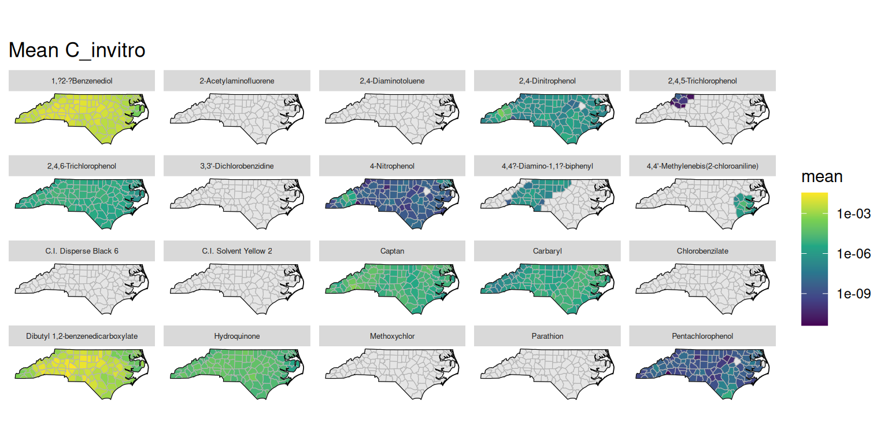
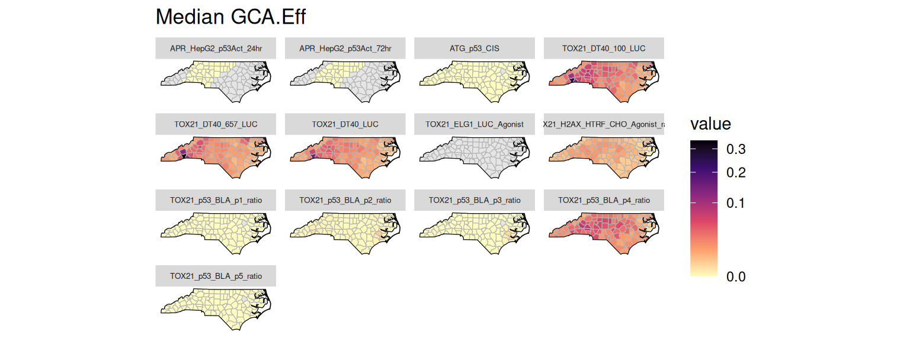
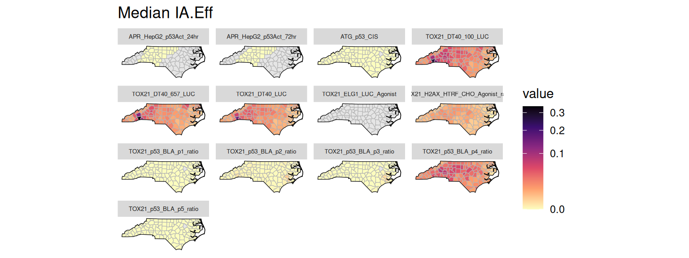
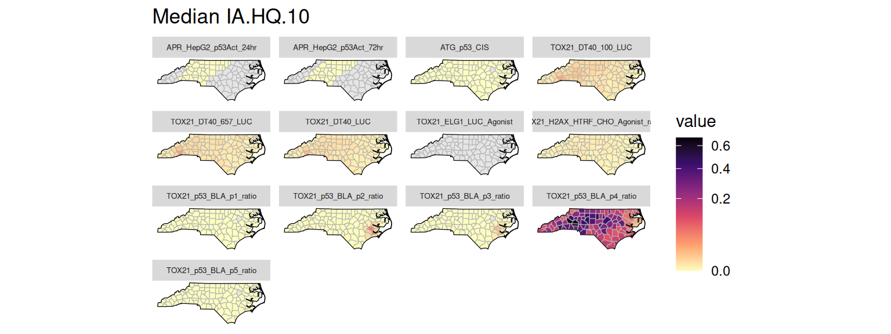
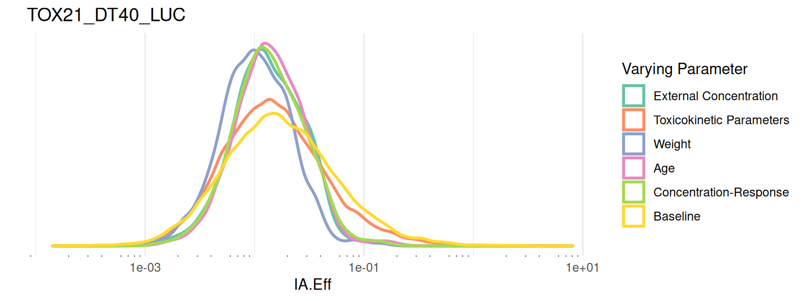

This vignette covers basic use of package functions. Package data, geo_tox_data, is used throughout the examples and details on how it was created can be found in the “GeoTox Package Data” vignette.
Setup
Load packages and set a seed for reproducibility.
Hill curve fitting
Hill curve fitting is a key step in the GeoTox workflow, as it provides the parameters needed to link internal concentrations to assay responses. The fit_hill() function can be used to fit Hill models to dose-response data, and the resulting parameters can be added to a GeoTox object for use in subsequent calculations. Dose-reponse data can be grouped by assay and substance to fit separate Hill curves for each combination.
hill_params <- fit_hill(
geo_tox_data$dose_response,
assay = "endp",
substance = c("casn", "chnm")
)
hill_params$fit
# A tibble: 85 × 16
endp casn chnm tp tp.sd logAC50 logAC50.sd slope slope.sd logc_min
<chr> <chr> <chr> <dbl> <dbl> <dbl> <dbl> <dbl> <dbl> <dbl>
1 APR_He… 510-… Chlo… 4.44 5.86 2.06 0.448 1 0 -0.398
2 APR_He… 92-8… 4,4?… 2.14 0.945 2.05 0.271 1 0 -0.398
3 APR_He… 95-9… 2,4,… 1.46 0.556 1.67 0.246 1 0 -0.699
4 APR_He… 510-… Chlo… 2.33 0.542 1.79 0.192 1 0 -0.398
5 APR_He… 72-4… Meth… 1.93 1.93 1.95 1.95 1 0 -0.398
6 APR_He… 92-8… 4,4?… 2.43 1.50 2.22 0.317 1 0 -0.398
7 ATG_p5… 87-8… Pent… 2.15 0.877 1.57 0.321 1 0 -1.30
8 TOX21_… 100-… 4-Ni… -63.4 94.6 2.18 0.784 1 0 -3
9 TOX21_… 101-… 4,4'… -65.6 169. 2.45 1.04 1 0 -3
10 TOX21_… 119-… C.I.… -95.5 18.6 1.45 0.175 1 0 -3
# ℹ 75 more rows
# ℹ 6 more variables: logc_max <dbl>, resp_min <dbl>, resp_max <dbl>,
# AIC <dbl>, tp.sd.imputed <lgl>, logAC50.sd.imputed <lgl>
$assay
[1] "endp"
$substance
[1] "casn" "chnm"Sometimes the standard deviation estimates may be missing. In these cases, fit_hill() will impute missing standard deviations with the corresponding parameter estimate. If this is not desirable, the imputed standard deviations can be identified using the tp.sd.imputed and logAC50.sd.imputed columns of the resulting object’s fit table, and these fits can be removed.
hill_params$fit <- hill_params$fit |>
filter(!tp.sd.imputed, !logAC50.sd.imputed)The resulting Hill curves can be visualized by plotting the fitted curves along with the original dose-response points.
ggplot() +
# Add original dose-response points
geom_point(
data = geo_tox_data$dose_response |>
semi_join(hill_params$fit, by = c("endp", "chnm")),
aes(x = 10^logc, y = resp),
pch = 1,
size = 0.5
) +
# Add Hill curves
pmap(
hill_params$fit |> select(endp, chnm, tp, logAC50, slope),
\(endp, chnm, tp, logAC50, slope) {
geom_function(
data = tibble(endp = endp, chnm = chnm),
fun = \(x, tp, logAC50, slope) {
tp / (1 + (10^logAC50 / x)^slope)
},
args = list(tp = tp, logAC50 = logAC50, slope = slope),
color = "red"
)
}
) +
# Format
facet_grid(endp ~ chnm, scales = "free_y") +
scale_x_log10(
limits = c(1e-4, 1e4),
labels = scales::label_log()
) +
theme(
axis.title = element_blank(),
axis.text = element_text(size = 5),
strip.text = element_text(size = 5)
)
Workflow steps
There are three main steps to the GeoTox workflow: creating a GeoTox object and setting various data components, simulating population characteristics and exposure, and calculating risk scores.
Create a GeoTox object
Creating a GeoTox object requires providing a path to a DuckDB database file. This can be an existing file or a new file that will be created. There are several components that can be set once the object is created.
-
set_boundary(): (optional) Store spatial boundary data as aBLOBin the database. The boundary data can be retrieved later usingget_boundary()and used for visualization. -
set_simulated_css(): Store pre-simulated steady-state plasma concentration data as a table in the database. These values are used bysample_simulated_css()(or the wrapper functionsimulate_population()). -
add_exposure_rate_params(): Add parameters needed to simulate exposure rates for specific routes, e.g. inhalation. These parameters are used bysimulate_exposure_rate()(or the wrapper functionsimulate_population()). -
add_hill_params(): Add parameters from Hill curve fitting to the database. These parameters are used bycalc_risk()(or the wrapper functioncalc_response()).
GT <- GeoTox("GeoTox-introduction.duckdb") |>
set_boundary(geo_tox_data$boundaries) |>
set_simulated_css(geo_tox_data$simulated_css) |>
add_exposure_rate_params() |>
add_hill_params(hill_params)Simulate a population
Population characteristics (age and obesity status) and exposure can be simulated using the simulate_population() function, which is a wrapper around simulate_age(), simulate_obesity(), simulate_exposure_rate(), and simulate_exposure(). Alternatively, set_sample() can be used for age and/or obesity status. The resulting simulated data is stored in the database and used for subsequent calculations. In addition, simulate_population() will sample steady-state plasma concentrations from the pre-simulated data using sample_simulated_css(), and set_fixed_css() will be called in preparation for sensitivity analysis.
GT <- GT |>
simulate_population(
age = geo_tox_data$age,
obesity = geo_tox_data$obesity,
exposure = geo_tox_data$exposure |> mutate(route = "inhalation"),
substance = c("casn", "chnm"),
n = 150
)Calculate risk
Risk scores can be calculated using the calc_response() function, which is a wrapper around calc_internal_dose(), calc_invitro_concentration(), and calc_risk(). Sensitivity analysis can then be performed using sensitivity_analysis().
GT <- GT |>
calc_response() |>
sensitivity_analysis()Results
An overview of the GeoTox object can be obtained by printing it.
GTGeoTox object
Database info:
dbdir: GeoTox-introduction.duckdb
Reset seed: FALSE
Assays: 13
Substances: 22
Locations: 100
Population: 150
Concentrations: C_ext, C_ss, D_int, C_invitro
Risk: GCA.Eff, IA.Eff, GCA.HQ.10, IA.HQ.10
Sensitivity: C_ext, age, css_params, fit_params, weightConnecting to the database allows access to the various tables that store the data used in the workflow.
con <- get_con(GT)
DBI::dbListTables(con) [1] "age" "assay"
[3] "boundary" "concentration"
[5] "exposure" "exposure_rate"
[7] "exposure_rate_params" "fixed_css"
[9] "hill_params" "location"
[11] "obesity" "par"
[13] "risk" "risk_sensitivity_C_ext"
[15] "risk_sensitivity_age" "risk_sensitivity_css_params"
[17] "risk_sensitivity_fit_params" "risk_sensitivity_weight"
[19] "route" "sample"
[21] "simulated_css" "substance"
DBI::dbDisconnect(con)Below are the tables that exist after performing sensitivity analysis on the example dataset.

There are several helper functions for fetching data from the database for use in visualization. Geographical boundary data can be retrieved using get_boundary() and combined with these other helper functions for plotting.
Exposure
Exposure data was added to the database using simulate_population(), which calls add_exposure() and simulate_exposure(). The input data used to simulate exposure values is stored in the exposure table and can be joined with the substance table to retrieve any entered chemical information. Below is an example of plotting the normalized mean exposure by county and chemical name.
plot_exposure <- function(GT) {
con <- get_con(GT)
withr::defer(DBI::dbDisconnect(con))
boundary <- GT |> get_boundary() |> deframe()
df <- tbl(con, "exposure") |>
left_join(tbl(con, "substance"), by = join_by(substance_id == id)) |>
collect() |>
left_join(boundary$county, by = join_by(location_id)) |>
sf::st_as_sf()
ggplot(df) +
geom_sf(aes(fill = norm), color = "grey70") +
facet_wrap(vars(chnm)) +
geom_sf(data = boundary$state, fill = NA, color = "black") +
scale_fill_viridis_c(transform = "sqrt") +
theme(
axis.text = element_text(size = 5),
strip.text = element_text(size = 5)
) +
ggtitle("Normalized mean exposure")
}
plot_exposure(GT)
Concentrations
Various concentration fields are stored in the concentration table. The helper function get_concentration_mean() can be used to fetch the mean values for a given concentration field, grouped by substance, route, and location. The concentration data can then be plotted similarly to the exposure data. Below are examples of plotting the mean external concentration (C_ext), steady-state plasma concentration (C_ss), internal dose (D_int), and in vitro concentration (C_invitro) by county and chemical name.
plot_concentration_mean <- function(GT, col, wrap_var = "chnm") {
con <- get_con(GT)
withr::defer(DBI::dbDisconnect(con))
boundary <- GT |> get_boundary() |> deframe()
# Substance data for joining chemical names
substance_df <- tbl(con, "substance") |> collect()
df <- get_concentration_mean(GT, col) |>
mutate(mean = if_else(mean == 0, NA, mean)) |>
left_join(substance_df, by = join_by(substance_id == id)) |>
left_join(boundary$county, by = join_by(location_id)) |>
sf::st_as_sf()
ggplot(df) +
geom_sf(aes(fill = mean), color = "grey70") +
facet_wrap(vars(.data[[wrap_var]])) +
geom_sf(data = boundary$state, fill = NA, color = "black") +
scale_fill_viridis_c(
transform = "log10",
na.value = "grey90"
) +
theme(
axis.text = element_blank(),
axis.ticks = element_blank(),
panel.background = element_blank(),
panel.grid = element_blank(),
strip.text = element_text(size = 5)
) +
ggtitle(paste("Mean", col))
}
plot_concentration_mean(GT, "C_ext")The duckplyr package is configured to fall back to dplyr when it encounters an
incompatibility. Fallback events can be collected and uploaded for analysis to
guide future development. By default, data will be collected but no data will
be uploaded.
ℹ Automatic fallback uploading is not controlled and therefore disabled, see
`?duckplyr::fallback()`.
✔ Number of reports ready for upload: 1.
→ Review with `duckplyr::fallback_review()`, upload with
`duckplyr::fallback_upload()`.
ℹ Configure automatic uploading with `duckplyr::fallback_config()`.
plot_concentration_mean(GT, "C_ss")
plot_concentration_mean(GT, "D_int")
plot_concentration_mean(GT, "C_invitro")
Risk
Several risk metrics are stored in the risk table. The helper function get_risk_quantiles() can be used to fetch quantiles of these risk metrics grouped by assay and location. Below are examples of plotting the median values for the generalized concentration addition (GCA) and independent action (IA) efficacy risk scores and the hazard quotients using the 10% effective concentration (HQ.10).
plot_risk_quantile <- function(
GT, col, wrap_var = "endp", quantiles = c("Median" = 0.5)
) {
con <- get_con(GT)
withr::defer(DBI::dbDisconnect(con))
boundary <- GT |> get_boundary() |> deframe()
# Assay data for joining assay names
assay_df <- tbl(con, "assay") |> collect()
df <- get_risk_quantiles(GT, col, quantiles) |>
left_join(assay_df, by = join_by(assay_id == id)) |>
left_join(boundary$county, by = join_by(location_id)) |>
sf::st_as_sf()
ggplot(df) +
geom_sf(aes(fill = value), color = "grey70") +
facet_wrap(vars(.data[[wrap_var]])) +
geom_sf(data = boundary$state, fill = NA, color = "black") +
scale_fill_viridis_c(
limits = c(0, max(df$value, na.rm = TRUE)),
direction = -1,
option = "A",
transform = "sqrt",
na.value = "grey90"
) +
theme(
axis.text = element_blank(),
axis.ticks = element_blank(),
panel.background = element_blank(),
panel.grid = element_blank(),
strip.text = element_text(size = 5)
) +
ggtitle(paste(names(quantiles), col))
}
plot_risk_quantile(GT, "GCA.Eff")
plot_risk_quantile(GT, "IA.Eff")
plot_risk_quantile(GT, "GCA.HQ.10")
plot_risk_quantile(GT, "IA.HQ.10")
Sensitivity
Results from sensitivity analyses are stored in the risk_sensitivity_* tables. The helper function get_risk_sensitivity() is a wrapper around get_risk_values(), which can be used to fetch sensitivity data for a given risk metric, to obtain values for all varying parameters grouped by location for a specific assay. Below is an example of plotting the sensitivity data for the IA efficacy risk score using ridgeline density plots.
plot_risk_sensitivity <- function(GT, metric, assay) {
df <- get_risk_sensitivity(GT, metric, assay) |>
rename(all_of(c(
"External Concentration" = "C_ext",
"Toxicokinetic Parameters" = "css_params",
"Weight" = "weight",
"Age" = "age",
"Concentration-Response" = "fit_params",
"Baseline" = "baseline"
)))
df <- df |>
pivot_longer(cols = everything()) |>
mutate(name = factor(name, levels = names(df)))
idx <- is.na(df$value)
if (any(idx)) {
warning(
"Removed ", sum(idx), " NA from risk sensitivity data.", call. = FALSE
)
df <- df |> filter(!idx)
}
if (nrow(df) == 0) {
stop("No risk sensitivity data to plot.", call. = FALSE)
}
ggplot(df) +
ggridges::stat_density_ridges(
aes(x = value, y = 0, color = name),
calc_ecdf = TRUE,
quantiles = 4,
quantile_lines = FALSE,
fill = NA,
linewidth = 1
) +
scale_x_log10(guide = "axis_logticks") +
scale_color_brewer(palette = "Set2") +
labs(x = metric, y = "", title = assay, color = 'Varying Parameter') +
theme_minimal() +
theme(
panel.grid.major.y = element_blank(),
panel.grid.minor.y = element_blank(),
axis.text.y = element_blank()
)
}
metric <- "IA.Eff"
assay <- c(endp = "TOX21_DT40_LUC")
plot_risk_sensitivity(GT, metric, assay)Picking joint bandwidth of 0.0495